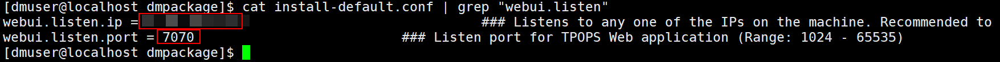
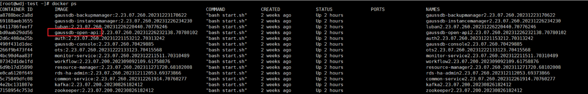
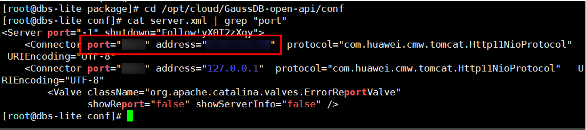

将GaussDB注册至OceanProtect需要提前获取TPOPS对外提供服务的管理面地址和端口，以下为管理面地址和端口的获取方式。
操作步骤
- 当使用的管理平台为OLTP OPS，通过以下步骤获取：
- 使用root用户登录已安装TPOPS Server的节点。
- 依次执行以下命令切换至dmuser账号，并进入软件包目录。
su - dmuser;
cd ~/dmpackage
- 执行以下命令查看管理面地址和端口。
cat install-default.conf | grep "webui.listen"
回显示例如下（“webui.listen.ip”的值为管理面地址，“webui.listen.port”的值为管理面端口）：

- 当使用的管理平台为云数据库GaussDB管理平台（TPOPS），通过以下步骤获取：
- 登录云数据库GaussDB管理平台（TPOPS）的任意节点的后台界面。
- 执行docker ps命令，查询带有“gaussdb-open-api”前缀的镜像名，记录对应的“CONTAINER ID”值。

- 执行以下命令，其中“CONTAINER_ID”为2记录的参数值。
docker exec -it CONTAINER_ID /bin/bash
- 执行cd /opt/cloud/GaussDB-open-api/conf cat server.xml | grep "port"命令查看管理面地址和端口，示例图如下：
